元编程概念：编写运行时动态修改程序本身的代码（编写产生代码的代码）【使用编程语言来操作或修改自己的代码,代码就是数据】
R中进行元编程的操作可以使用base R中的函数，也可以使用rlang函数【tidyverse用的就是这个】，当然，data.table也有自己的元编程。
通过操作命令与执行环境，操作自己的代码
call函数构建一个命令（function call），其第一个参数必须是一个字符串，指明需要被构建的命令，其余参数都会被传递给新生成的命令。
cl <- call("round",1.11)
cl
## round(1.11)
class(cl);typeof(cl)
## [1] "call"
## [1] "language"
identical(cl,quote(round(1.11)))
## [1] TRUE
is.call(cl) && is.language(cl)
## [1] TRUE
eval(cl)
## [1] 1
(cl_list <- as.list(cl))
## [[1]]
## round
##
## [[2]]
## [1] 1.11
as.call(cl_list)
## round(1.11)
mode(cl_list) <- "call";cl_list
## round(1.11)do.call(what, args, quote = FALSE, envir = parent.frame())命令则是直接在envir中执行call命令。
quote(expr)函数捕获未执行的代码。enquote(cl)捕获代码的运行结果,cl为call对象。
quote(1:9 + 2)
## 1:9 + 2
enquote(1:9 + 2)
## base::quote(c(3, 4, 5, 6, 7, 8, 9, 10, 11))如果希望捕获代码中，某些变量名被替换为对应的值，可以使用substitute(expr, env),substitute函数除了需要捕获的代码，还可以传递一个替换环境env（可以是列表、数据框、执行环境等）参数，此时代码中的变量名如果在env中有对应的值，则会被替换为相应的值，除非env是全局执行环境。
如果只希望特定的变量名可以被替换，而非所有在执行环境中存在的变量都会被替换，则可以使用bquote函数，该函数定义了一种特殊的语法格式——所有被包含在.()中的变量名才会被替换。
substitute(a + b, list(b = 1))
## a + 1
substitute(a + b, baseenv())
## .Primitive("+")(a, b)
b <- 1;substitute(a + b, globalenv())
## a + b
bquote(x <- .(x) + 1, list(x = 1:9))
## x <- 1:9 + 1eval(expr, envir, enclos)执行捕获的代码，其中envir是代码中变量名的首要查找位置，envir中查找不到的变量名会在enclos中查找。
在指定的环境中计算R表达式。
在指定的环境中计算R表达式
## Error in eval(expr, envir, enclos): object '在指定的环境中计算R表达式' not found
#local函数默认情况下会在一个临时执行环境中执行代码，可以有效的舍弃运算过程中产生的中间变量，返回最后一行表达式，类似函数。
local({
a <- 1:9;
b <- a
},envir = new.env())
a;b
## Error in eval(expr, envir, enclos): object 'a' not found
## [1] 1由操作符~构成的命令，被捕获或执行后结果是一致的，唯一的区别在于～被捕获后产生的结果没有属性（attributes）部分，但无论何种情况我们可以像操作命令树一样取出~前后的内容，所以~经常被用作捕获代码的便捷操作符号。
str(eval(y~x))
## Class 'formula' language y ~ x
## ..- attr(*, ".Environment")=<environment: R_GlobalEnv>
str(quote(y~x))
## language y ~ xknitr::include_graphics("./images/rmetaprogramming.svg")